David Montenegro
FAB ACADEMY 2015
Final Project | Assignments | Download | About | Contact
Final project
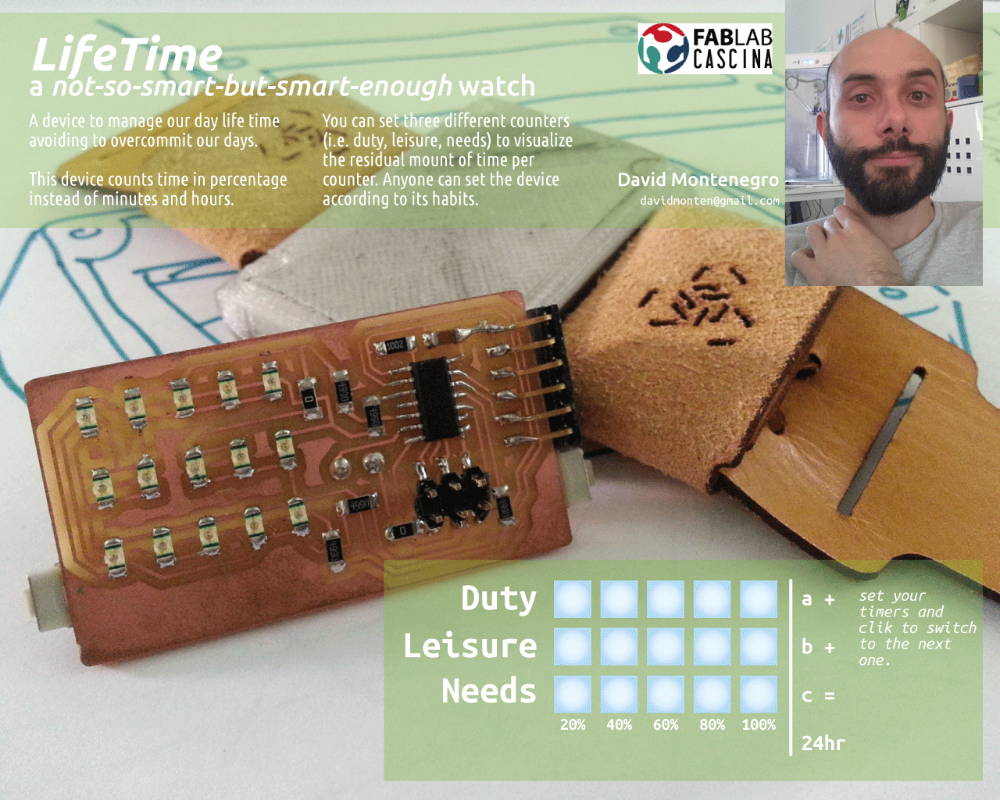
A device to better manage our everyday time to help us to not overcommit our lives.
A simple way to visualize and manage time from a different point of view.
A non invasive but strongly communicative device to tink about time as a discrete resource instead of a continuous flow.
It count time as a percentage over an amount of time defined by the user instead of a delta between two moments. This way I can commit an amount of time to do something and monitor how much time left I have.
Thinking about our everyday life we can easily recognize three main classes of tasks: duties, leisure and needs. These three categories are bounded by the following equation:
Duties + Leisure < 24h - Needs
so each of them is a variable that everyone can set.
The residual amount for each variable is shown by three led bars, going always from 100% to 0% at different rates depending on the amount of time resource committed for each one.
Two buttons to press simultaneously allow to swap from a variable to another.
When the current variable reach the 0% automatically the other two will be decreased at half of each rate until you wont choose which one is currently running; when also the second variable has reached the 0% the remaining variable continue to decrease at it’s own rate.
What questions need to be answered?
Will it be a useful device?
Will help me to better organize my time?
How can it evolve?
What function can easily be integrated using the same hardware?
What functions can be integrated upgrading the hardware?
How can it be optimized?
Does people will build it? and why? or why not?
Who’s done what beforehand?
Everything starts from this an article I’ve read online some month ago. A Formula to Stop You from Overcommitting Your Time
This device will just show this simple principle overtime.
Online I’ve found different watches with fancy displays, but the most counts on hours and minutes base, just because they are watches, and they don’t need to be configured but just synchronized with the local area time.
The closer to my idea is the Kisai Denshoku led watch because of its japan style minimalism, but even with a fancy visualization it still counts time as usual.
Last example of minimal watches is the Nixie watch using a nixie tube
At the following link I’ve found an interesting website about data visualization Flowing Data
For this project the following processes will be used:
- Project planning
- Electronic design
- Elettronic production
- 3D design
- 3D milling
- Molding and casting
- Lasercutting
- Input and output
- Embeeded programming
- Interface design
Project’s modules
Project planning
The whole project consist in several modules; every module may be made in one ore more process. I simply divided the processes by pertinence and developed one by one.
The schedule was not originally defined because at the first time the my final project was different and it has been discarded due to a too high complexity and too much cost.
Here the schedule
- Project planning 13.05.2015
- Electronic design 16.05.2015
- 3D design 18.05.2015
- Elettronic production 18.05.2015
- 3D milling 24.05.2015
- Lasercutting 24.05.2015
- Molding and casting 26.05.2015
- Input and output 01.06.2015
- Embeeded programming 02.06.2015
- Interface design 05.06.2015
More details can be found at Applications and Implications page
Board
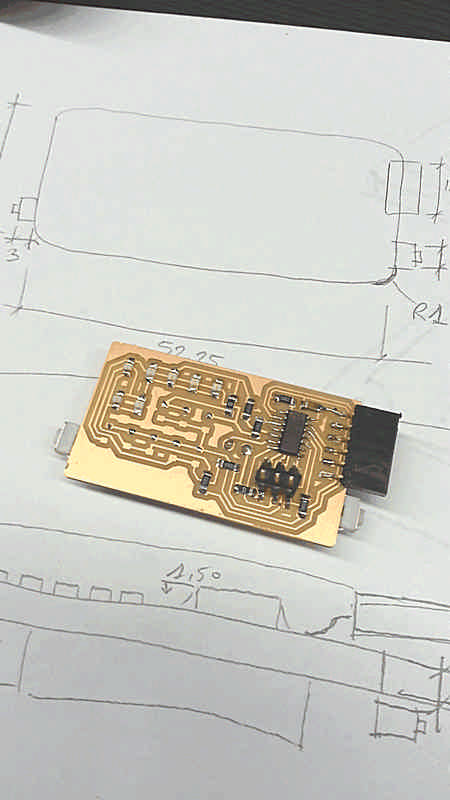
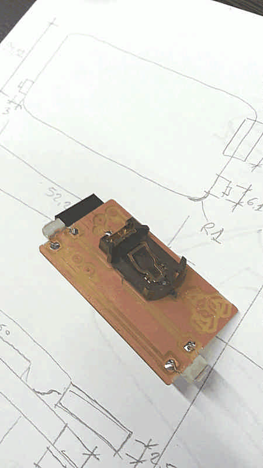
First of all I started designing the board because it will define the minimum space needed for the components.
I started from a board made during the Output assignment and than I milled a more compact double layer board that measures 29.36x52.23x1.65 with 1mm round corners. At first attempt some traces where not well defined and the overall size of the battery case exceeded the edge of the board.
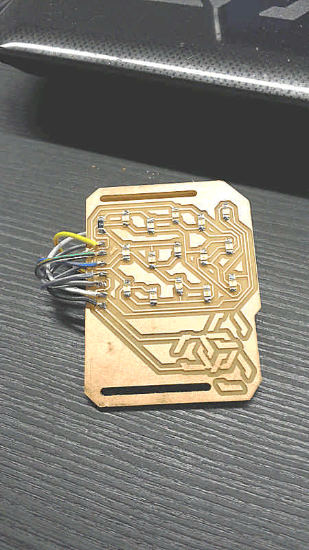
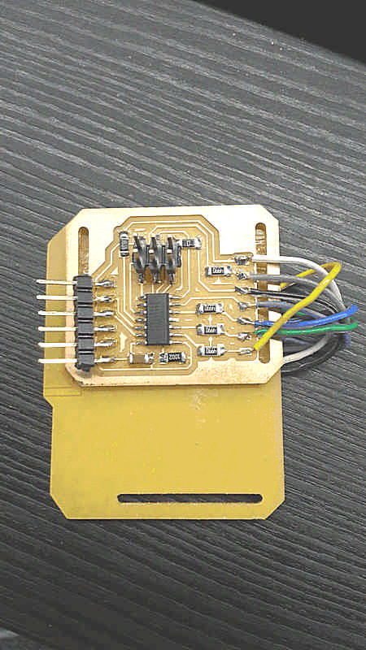
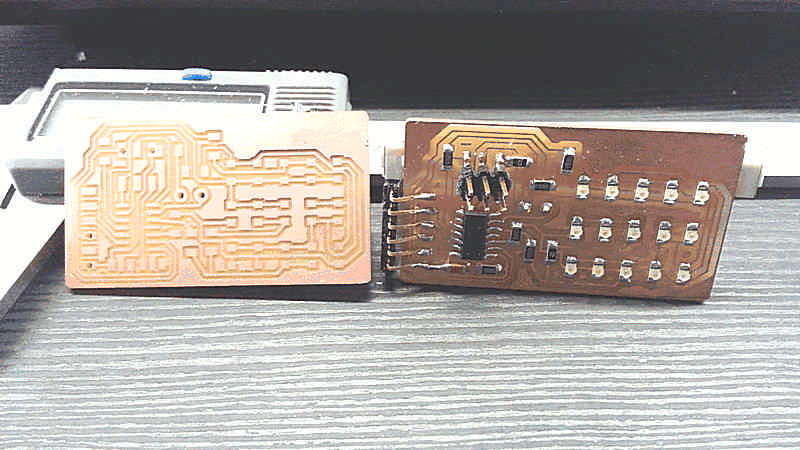
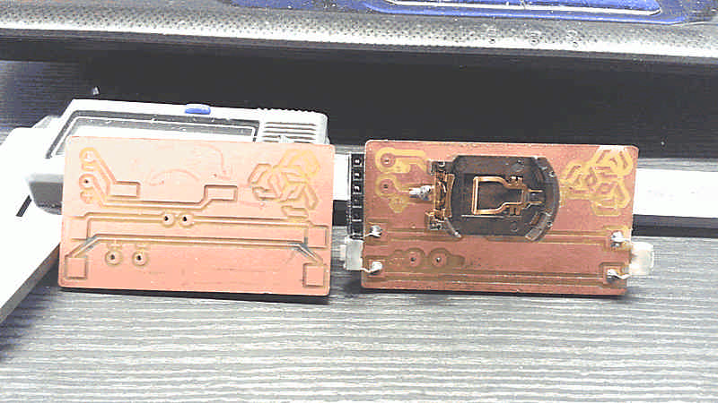
To avoid accidental pressures of the button I made an hardware double-button so the actual pressure is read just if both the physic buttons are pressed simultaneously.
On the back side there are two pads to power the board with external power source because the energy issue is one of the main field for further developments.
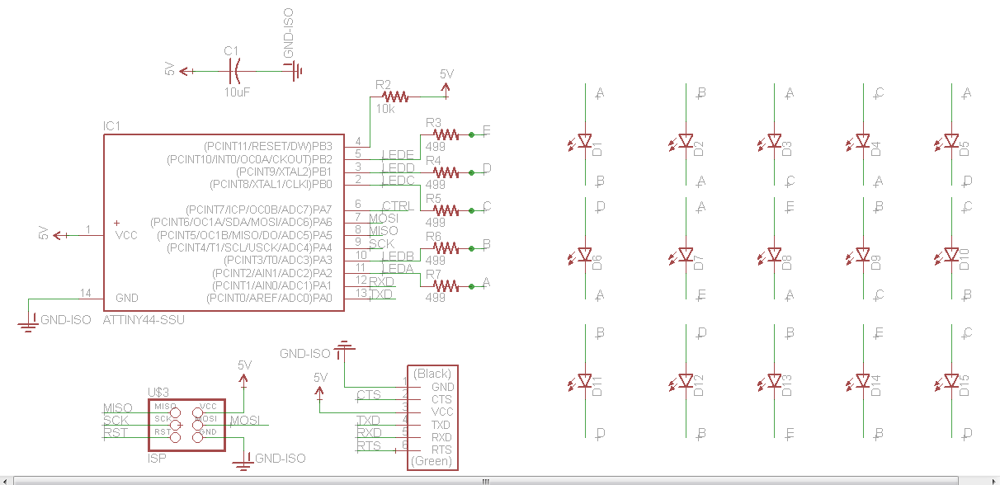
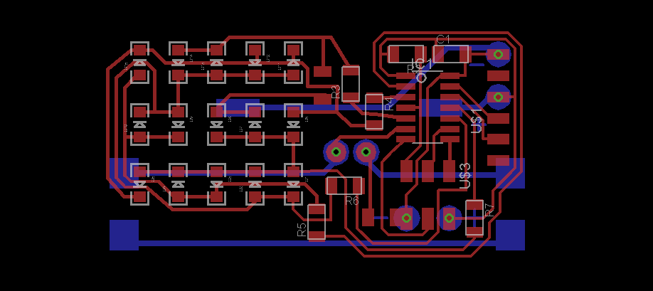
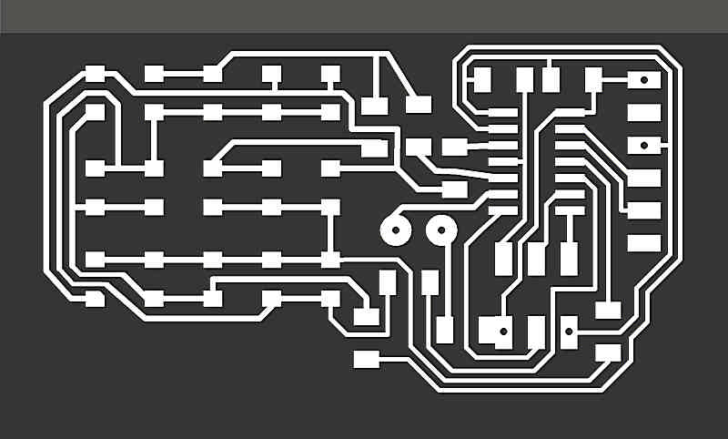
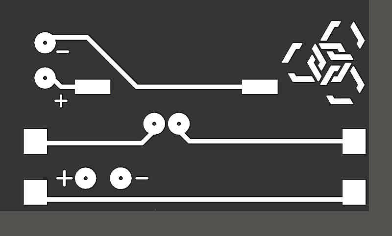
When I first mounted the FTDI slot it was parallel with the board, but goes outside the silhouette of the board so I decided to bend it, paying attention to not touch the traces nearby, and direct the slot the bottom of the frame.
Before to mount the buttons on the side of the board I manually removed the copper on the edge, otherwise the button would be constantly “pressed”.
Frame
The frame has to be sturdy, reliable, simple. This part can be made in two different ways and I tried both: 3D print and casting. Due to its small size also tolerance and precision can’t be left behind.
First I designed the shape with 3D software starting from the overall size of the board components.
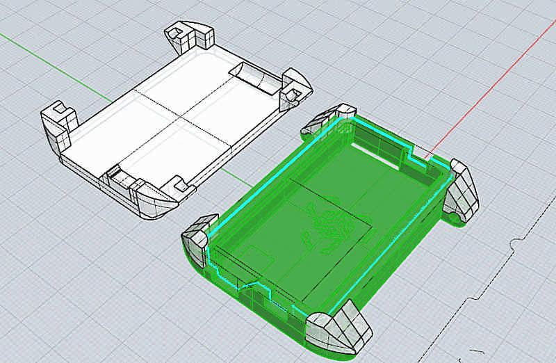
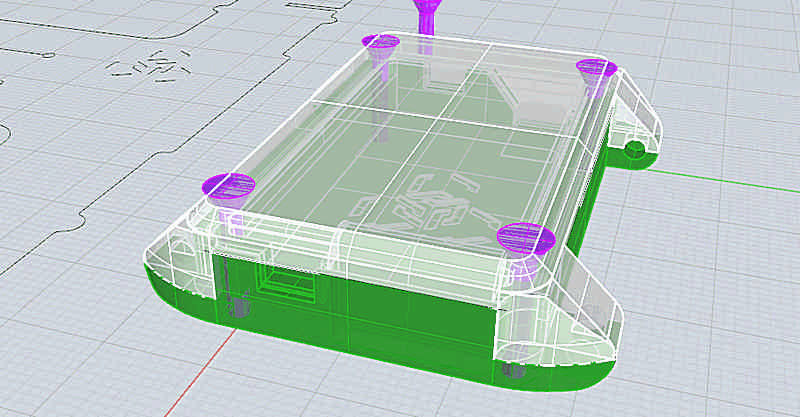
On the right side it has a slot for the button, on the left side a slot for the button and a slot for a microUSB plug for further implementation of lipo battery and easier connections.
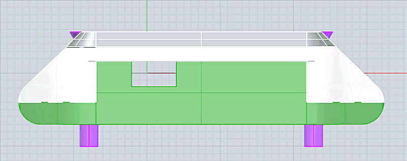
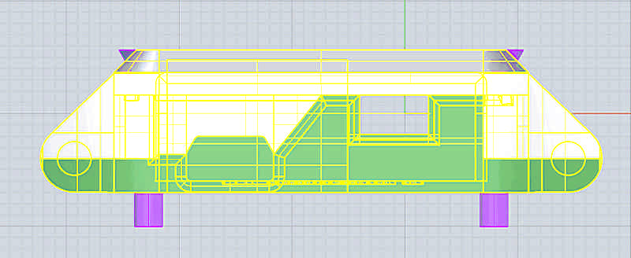
I made it first with 3D printer to verify shapes and dimensions and fix tolerances to fit properly; the first test has revealed some major mistake that doesn’t allow at all the fit of the two parts. After the first test I’ ve loosened the fit by 0.2mm and continued with more test.
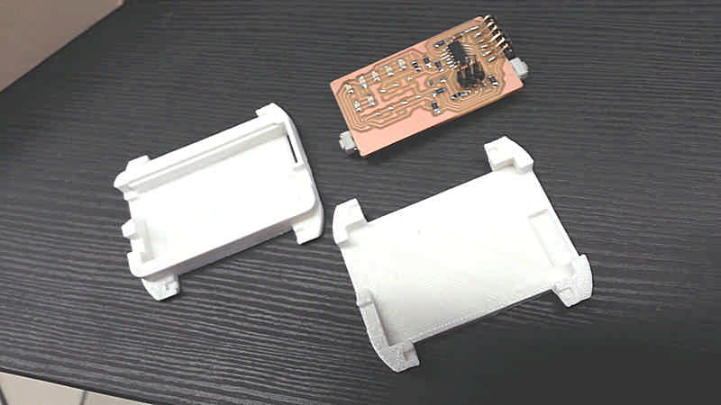
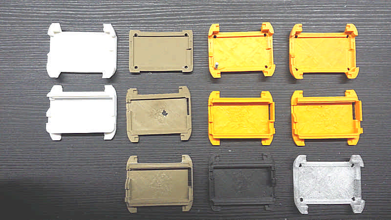
The upper shell has to be transparent, or in any case has to let the light pass through. For this reason I 3D printed this piece in Taulman T-glasse, the only material 3d-pintable that lets light pass trough itself.
Otherwise I can make a double mold to cast a see-through resin.
To do so I made master milled from wax.
The wax master needs much more attention because of the two shell and the long time needed to mill it. I first used a 3mm endmill to the rough finish and a 1.54 endmill for the fine finish.
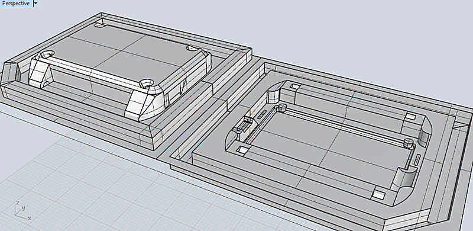
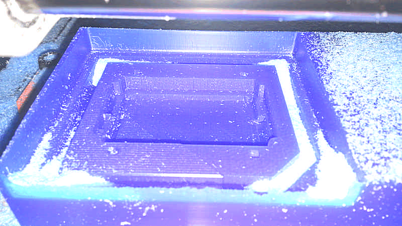
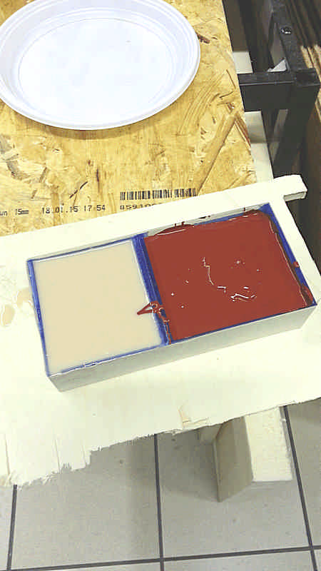

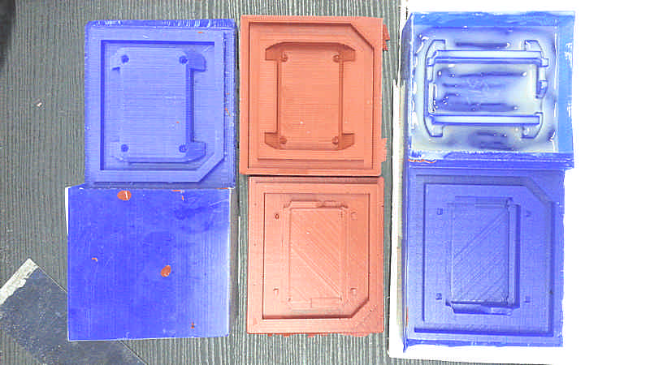
At the first attempt I’ve got some trouble with the scale, so I don’t mixed the correct amount of pasts. The rsult was that the silicone after 24hrs were still liquid, so I poured it into a jar to redo the mold and at the second attempt it has came out well.
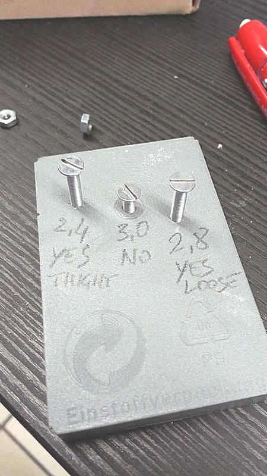
Due to its shape the lower shell can be made in an open mold. Moreover the lower shell doesn’t need to be transparent and so I decided to use a metal filled resin, but first I made a simple test to verify how a steel thread works on resin and how large the hole has to be. For an M3 screw a 2.4mm holes works well but a little bit tight while a 2.8mm holes can be threaded anyway, but it works smoother. I simply don’t know on the long run what’s the best but to avoid to overstress the resin matrix I’ll go with a 2.8mm and if the screw will loosen I’l put some teflon.
To mix filled resins it’s recommended to weigh the part A, than add the filler and than complete adding the part B to start the chemical reaction. If you want you can even control the weight of the object because the metal filler is far more heavy than resin (from about 5 to about 7 times).
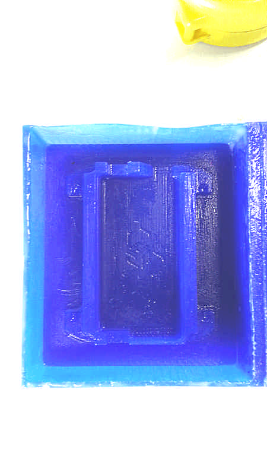
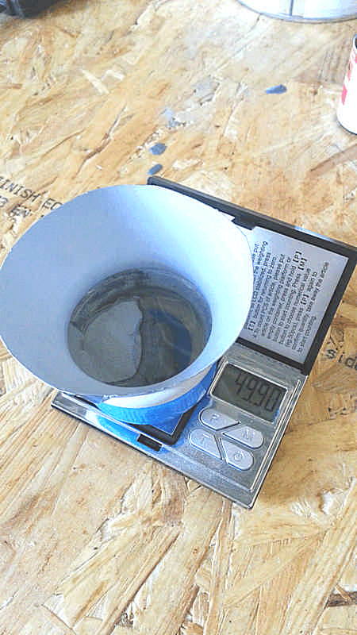
I also produced 3d-printed version of the lower shell to compare the results. It has been made with different materials: with bronze filled PLA for a metallic warm finish and a good weight-feel, and carbon filled PLA for a light and strong structure in addition to simple PLA for test.
Add link to download files HERE: upper_shell, lower_shell, uppershell_mold_up, uppershell_mold_down, lowershell_mold
Watchstrap
- It’s lasercutted and assembled without any sort of glue or even sewing, but just using hinges.
Code
- Code to drive the led matrix
- Program of the device
- Configuration interface
Materials and components required
Electronics
Atmel ATtiny44
Quantity 1
Cost 1.05€
Led Blue Clear 1206
Quantity 15
Cost 0.45€
Resistor 0kOhm 1206
Quantity 1
Cost 0.004€
Resistor 10kOhm 1206
Quantity 1
Cost 0.05€
Resistor 499Ohm 1206
Quantity 5
Cost 0.03€
Capacitor 1uF 1206
Quantity 1
Cost 0.14€
FTDI pins
Quantity 1
Cost 0.14€
ISP pins
Quantity 1
Cost 1.86€
Enclosure
Frame
Quantity 20g
Cost 3€
Process Casting
Front
Quantity 5g
Cost 0.50€
Process 3D print